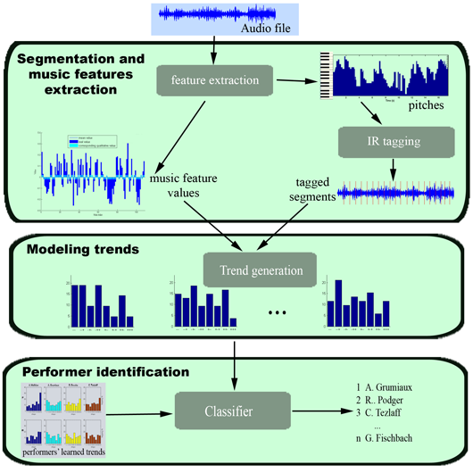
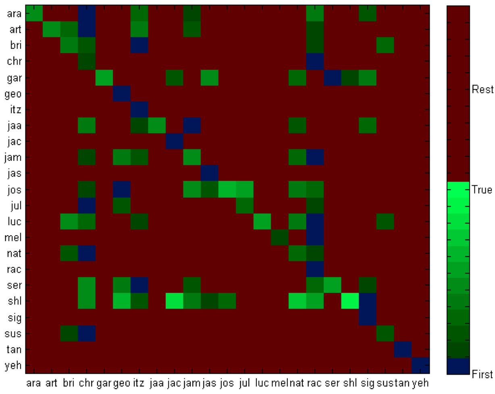
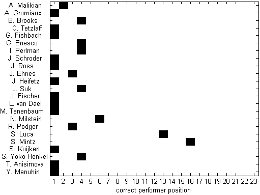

The research is focused on the task of identifying violinists from their playing style using descriptors automatically extracted from commercial audio recordings by means of state-of-the-art feature extraction tools.
Our approach for dealing with the identification of violin performers is based on the acquisition of trend models that characterize each particular performer to be identified. Specifically, a trend model characterizes, for a specific audio descriptor, the relationships a given performer is establishing among groups of neighbor musical events. We perform a qualitative analysis of the variations of the audio descriptors with a local perspective.
A trend model is represented by a set of discrete probability distributions for a given audio descriptor (e.g. energy). Each of these probability distributions represents the way a given IR pattern is played against that certain audio descriptor.
See the PDF version of our ISMIR'08 paper describing this research.
Our system has been designed in a modular way with the intention of creating an easy extendable framework. We have three different types of modules in the system: 1) the audio feature extraction modules; 2) the trend analysis modules; and 3) the identification modules. Moreover, the system may work in two different modes: in a training mode or in a testing mode. Modules from (1) and (2) are used in both modes. Modules from (3) are only used in the testing mode.

We have chosen to work with Sonatas and Partitas for solo violin from J.S. Bach. Sonatas and Partitas for solo Violin by J.S. Bach is a six work collection (three Sonatas and three Partitas) composed by the German musician. It is a well-known collection that almost every violinist plays during its artistic life.
Classification Results where the Sixth movement of Partita No.1 was used for training and the Second movement of Partita No.1 was used for testing:

The figure shows, for each input recording (row), the sorted list of predicted performers as squares. The green scale maps to the ranking values. The blue color indicates the first performer proposed and the green degradation is used to draw all the performers predicted until the correct one. Notice that the success in the first position means a blue square in the diagonal. The matrix is not supposed to be symmetric and each column can have the same color several times because a predicted performer can occur in the same position for several inputs. For instance, we can see that Garret Fischbach's performance (gar) for Sixth Movement is very different from the rest of performers' Second Movement performances: all values correspond to last position (i.e. the furthest). On the other hand, Christian Tetzlaff's (chr) and Rachel Podger's (rac) performances are quite similar to most of Second Movement performances since there are many squares in their columns.
Classification Results where the Second movement of Partita No.1 was used for training and the Sixth movement of Partita No.1 was used for testing:

Results show that more than 50% of the Violinists are identified at the first position. In fact, with the exception of two violinists (Sergiu Luca and Shlomo Mintz) are successfully identified.